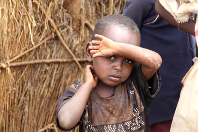
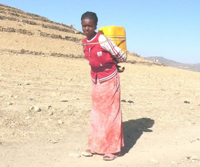

|
Mittwoch, 31. August 2011 |
Dürre in Ostafrika
Bündnis "Entwicklung Hilft" legt Bericht über Ostafrika-Hilfe vor |
Von der schlimmsten Dürre seit 60 Jahren sind am Horn von Afrika zwölf Millionen Menschen betroffen. Das »Bündnis Entwicklung Hilft« hat über die Arbeit seiner Mitglieder und Partner vor Ort einen Bericht vorgelegt, der aufzeigt, wie vor Ort akute Nothilfe geleistet wird und bereits jetzt Vorbereitungen für eine langfristige Veränderung getroffen werden:
PDF-Download
Brot für die Welt, medico international, Misereor, terre des hommes und Welthungerhilfe leisten als Bündnis Entwicklung Hilft akute und langfristige Hilfe bei Katastrophen und in Krisengebieten. Christoffel-Blindenmission und Kindernothilfe sind Bündnis-Partner und seit Jahrzehnten in Ostafrika tätig. Für die Linderung der Not der Menschen in Ostafrika bittet das Bündnis Entwicklung Hilft die Bevölkerung um Spenden:
Ihre Spende - Stichwort: "Ostafrika"
Spendenkonto 51 51
Bank für Sozialwirtschaft
BLZ 370 205 00
Spendenkonto 120 790
Sparkasse Baden-Baden / Gaggenau
BLZ 662 500 30
Spendenkonto 102 748 00
VoBa Baden-Baden / Rastatt
BLZ 662 900 00 |
Mittwoch, 31. August 2011 |
"Frühestens im Jahr 2012 wird es wieder eine Ernte geben"
Bündnis Entwicklung Hilft intensiviert seine Hilfsmaßnahmen in Ostafrika |
|
Die Situation der Hungernden in Ostafrika ist weiterhin dramatisch. Mehr als zwölf Millionen Menschen sind von der katastrophalen Dürre am Horn von Afrika betroffen. In manchen Gebieten sind bereits drei von zehn Kindern massiv unterernährt. „Der Hilfsbedarf wird noch über viele Monate hinweg riesig sein. Frühestens im Januar 2012 wird es wieder eine Ernte geben“, erklärt Peter Mucke, Geschäftsführer des Bündnis Entwicklung Hilft.
Die Bündnis-Mitglieder und Bündnis-Partner haben ihre Hilfsmaßnahmen in Kenia, Somalia und Äthiopien weiter intensiviert:
Brot für die Welt
Brot für die Welt arbeitet in Somalia über zwei lokale Partnerorganisationen. Für die laufenden Projekte erhalten diese zusätzlich 408.000 Euro für 2.050 Kinder und Jugendliche zum Wiederaufbau von Schulen sowie Unterricht in friedlicher Konfliktlösung in den kommenden beiden Jahren.
Die Diakonie Katastrophenhilfe, die Schwesterorganisation von Brot für die Welt, unterstützt die Dürre-Opfer mit Nahrungsmitteln, Trinkwasser, Latrinen und Notunterkünften. Auch diese Hilfsmaßnahmen werden von einer der lokalen Partnerorganisationen umgesetzt. Dafür hat die Diakonie Katastrophenhilfe kürzlich 345.000 Euro bereit gestellt. Sie unterstützt damit 28.800 innerhalb Somalias vertriebene Menschen.
In Kenia wird Brot für die Welt zwei bereits laufende Hilfsprojekte zur ländlichen Entwicklung und Ernährungssicherung ausweiten. Das evangelische Hilfswerk unterstützt auf diese Weise Familien von Kleinbauern und Viehhaltern bei der Anpassung ihrer Lebensweise an die veränderten klimatischen Bedingungen. Nur so können die Menschen und Tiere in dieser Region überleben. Langfristig sollen Bäuerinnen und Bauern in nachhaltiger Landwirtschaft ausgebildet werden. Sie erlernen Techniken, die für den Anbau in Trockengebieten unabdingbar sind, und erhalten Informationen zu Boden- und Erosionsschutz. Anbautechniken wie der Anbau von Feldfrüchten mit geringerem Wasserbedarf, Fruchtwechsel und Mischkultur beugen Missernten vor und sichern langfristig das Überleben in Dürreregionen.
Kenias Nomaden sind von der schweren Dürre besonders betroffen. Für die Viehhalter mit ihrer traditionell nomadischen Lebensweise bedeutet sie eine existentielle Bedrohung. Wenn das Vieh stirbt, gibt es keine Milch, kein Fleisch, keine Produkte, um Handel zu betreiben. Nur der Fortbestand ihrer Viehherden ermöglicht Nomadenfamilien nachhaltig ein Auskommen. Brot für die Welt bildet Nomaden in angepasster Viehhaltung aus und fördert die Haltung lokaler Geflügelrassen in 600 Familien. Veterinärmedizinische Assistenzkräfte werden ausgebildet und ausgestattet, die Kaninchenzucht für rund 300 kleinbäuerliche Familien ermöglicht.
In Äthiopien engagiert sich Brot für die Welt im Umfeld der Lager von Dolo Ado. Dort wird der Lebensraum der einheimischen Bevölkerung durch den Zuzug der vielen Flüchtlinge, durch Transporte und Versorgungsmaßnahmen schwer in Mitleidenschaft gezogen. Ein neues Projekt soll diesen Schäden entgegenwirken und die Lebensbedingungen für alle – Mensch und Tier, Einheimische und Flüchtlinge – wieder verbessern. Dazu gehören alle Maßnahmen zum Schutz der Wasserressourcen: Bestehende Brunnen und Pumpen werden renoviert oder instandgehalten. Neue Brunnen und Zisternen, die Regenwasser auffangen, werden errichtet. In der Umgebung legen die Dorfgemeinschaften Baumschulen an, pflanzen Setzlinge und junge Bäume. Gleichzeitig wird der Holzverbrauch beim Kochen durch holzsparende Ethanol-Öfen reduziert. Brot für die Welt hat dafür 300.000 Euro bereitgestellt und erreicht damit 100.000 Menschen in Äthiopien.
medico international
medico international ist über seinen lokalen Partner African Centre for Volunteers (ACV) aktiv. ACV arbeitet im Distrikt Garissa im Osten Kenias, wo drei Lager rund um den Ort Dadaab das weltweit größte Flüchtlingslager bilden. Täglich kommen hier Hunderte Flüchtlinge an. Die Organisation konzentriert ihre Hilfsmaßnahmen bewusst auf Siedlungen außerhalb der Lager, denn auch die kenianische Bevölkerung ist von der Hungersnot betroffen. Außerdem suchen immer mehr Flüchtlinge in den umliegenden Dörfern Zuflucht, weil die Lager hoffnungslos überfüllt sind.
Für Flüchtlinge wie Einheimische geht es um das Allernotwendigste: Versorgung mit Wasser, Nahrungsmitteln und Medizin. Nötig sind aber auch Gesundheitsaufklärung und die Stärkung der Basisgesundheitsversorgung. Sowohl ACV als auch medico international sind Teil des „People’s Health Movement“, einer weltweiten Gesundheitsbewegung, die sich für das Menschenrecht auf Gesundheit einsetzt. Dazu gehört auch die politische Auseinandersetzung mit der Frage, worin die Ursachen solcher Hungerkatastrophen liegen und wie sie beseitigt werden können.
Misereor
Misereor hat bisher für die Hilfe in den Hungergebieten Ostafrikas knapp 1,2 Millionen Euro bewilligt. Zur Linderung der Not in Somalia beteiligt sich das Hilfswerk aktuell zum Beispiel an der Versorgung von rund 30.000 Dürreopfern im besonders betroffenen südlichen Zentralsomalia, die Nahrungsmittel, Wasser, Hygiene-Sets, Saatgut und Dünger erhalten. Zudem wird das verbleibende Vieh von Tiermedizinern betreut. Ein weiteres von Misereor mitfinanziertes Projekt sichert die Versorgung von 40.000 Menschen in der genannten Region unter anderem mit Medikamenten, Spezialnahrung für Kinder, Schwangere und stillende Frauen sowie mit Mitteln zur Vorbeugung gegen Cholera. Zudem unterstützt Misereor die Versorgung von etwa 6.500 Binnenflüchtlingen mit Mais-, Sesam- und Erbsensaatgut.
In Äthiopien finanziert Misereor neben diversen anderen Hilfsmaßnahmen die Verteilung von Spezialnahrung an etwa 2.500 unterernährte Kinder unter fünf Jahren, Schwangere und stillende Frauen sowie die Bereitstellung von Medikamenten und medizinischem Material.
In Kenia setzt Misereor auf die Expertise langjähriger Partner wie Schwester Esther Mwaniki, Leiterin des „East Pokot Medical Project“ in der Region Baringo im Westen des Landes. Allein in dieser Region hungern rund 130.000 Menschen. „Vor allem Frauen und Kinder sind betroffen“, sagt Mwaniki. „Viele haben nicht mehr die Kraft, zu unseren Gesundheitsstationen zu kommen, deshalb fahren wir in dieser Situation direkt zu den Menschen und verteilen Lebensmittel und Wasser.“ Problematisch sei auch, dass Durchfall-Erkrankungen in East Pokot weiter zunehmen und die Menschen dadurch zusätzlich geschwächt werden. „Das Wasser ist oft mit Keimen verseucht“ sagt Schwester Esther, die seit Beginn der Hungersnot ununterbrochen mit ihrem Team im Einsatz ist, um den Menschen in East Pokot zu helfen.
Die von Misereor finanzierten 23 mobilen Gesundheitsstationen sind für die Menschen in der 4.500 Quadratkilometer großen Region die einzige Möglichkeit, sich behandeln und impfen zu lassen. Nun erhalten sie über diese Gesundheitsstationen auch Essen. Mit finanzieller Unterstützung von Misereor beschafft Schwester Esther Nahrungsmittel wie getrocknetes Gemüse, Hirse und Bohnen, dazu Wasser und Medikamente. Zudem investiert Misereor Geld in die Friedens- und Konfliktarbeit, da es in den Dürregebieten zum Teil zu massiven Konflikten um die knapper werdenden Ressourcen wie Wasser, Weideland und Vieh kommt.
Eines der am stärksten von der Dürre betroffenen Gebiete in Kenia ist das der Diözese Marsabit im Nordosten des Landes. Partner von Misereor berichten, dass die meisten natürlichen Wasserstellen ausgetrocknet sind und die Brunnen nicht mehr genug Wasser für Mensch und Tier bereithalten.
„Die Menschen überleben hier nur noch durch Wasserlieferungen mit Tankwagen“, erklärt Joseph Mirgichan, Entwicklungskoordinator der Diözese. „Die Menschen brauchen jetzt Wasser und Nahrung, aber sie müssen auch langfristig unterstützt werden.“ Mit der Soforthilfe verstärkt Misereor seine Unterstützung für das Wasser-Programm in Marsabit und versorgt die betroffenen Menschen überdies mit Nahrungsmitteln und Medikamenten. Eine Hilfe, die neben der Linderung der unmittelbaren Not auch dauerhaft wirkt.
„Durch Wasserrückhaltebecken, Brunnen, Untergrundreservoire und Regenwassersammeltanks erhält die besonders arme und benachteiligte Bevölkerung langfristig Zugang zu sauberem Trinkwasser“, erklärt Misereor-Geschäftsführer Martin Bröckelmann-Simon. „Mit dem Wasser kann auch das Vieh Dürreperioden länger überstehen. Für die Nomaden-Völker dieser Region ist das überlebenswichtig.“
Welthungerhilfe
Die Welthungerhilfe hat mehrere Mitarbeiter des Nothilfeteams in den Osten Kenias entsandt, wo sie Wassersammelbecken und öffentliche Zisternen mithilfe von Tanklastwagen füllen und neue Tanks aufstellen. Im Flüchtlingslager Dadaab versorgt das Hilfswerk in Kooperation mit ihrem italienischen Alliance2015-Partner Cesvi und dem Flüchtlingswerk der Vereinten Nationen (UNHCR) 180.000 Menschen mit Hilfsgütern.
In der Region Afar im Nordosten Äthiopiens versorgt die Welthungerhilfe zwei Monate lang mehr als 13.500 Menschen und 5.000 Kinder mit Nahrungsmitteln sowie 2.000 Schwangere oder Stillende mit spezieller Aufbaunahrung. Die Güter werden auf den lokalen Märkten eingekauft, die Verteilung von der lokalen Partnerorganisation unterstützt. In der von der Dürre besonders betroffenen Region Borena im Süden von Äthiopien sind Nahrungsmittelverteilungen in Vorbereitung. Ab Ende August werden Mais, Bohnen, Öl sowie Wasser verteilt. Hilfsmaßnahmen in weiteren Regionen sind in Planung: Verteilung von angereicherter Ergänzungsnahrung und die Beseitigung von Tierkadavern, die ein Gesundheitsrisiko darstellen.
In den betroffenen Dürregebieten im Süden Somalias und rund um die Hauptstadt Mogadischu ist die Welthungerhilfe über den Alliance2015-Partner Concern aktiv. Dort werden Nahrungsmittelrationen (Reis, Öl, Zucker, Mehl) für sechs Monate an knapp 2.000 Menschen verteilt. Um die einheimische Wirtschaft anzukurbeln, erhalten Familien Gutscheine, die sie in lokalen Läden gegen Nahrungsmittel umtauschen.
Für die Hilfsmaßnahmen in Kenia, Äthiopien und Somalia hat die Welthungerhilfe bisher 4,76 Millionen Euro bereitgestellt.
Christoffel-Blindenmission
Der Bündnis-Partner Christoffel-Blindenmission (CBM) ist im Norden und Nordosten Kenias aktiv, wo sich die Ernährungsunsicherheit seit Mitte 2010 drastisch verschärft hat. In den ersten Wochen versorgten Partner der CBM besonders verletzliche Menschen mit Lebensmitteln: Kleinkinder, die eine für sie geeignete Spezialnahrung benötigen, und Kinder und Erwachsene mit Behinderungen und ihre Familien.
An die Mütter von rund 800 Kindern unter fünf Jahren verteilte der CBM-Partner SPARK in Kirua eine besondere Zusatznahrungs-Mischung aus vier Mehlsorten. Dabei informierte er die Frauen auch über sinnvolle Ernährung und Hygiene unter den gegebenen Umständen. Insbesondere wies SPARK die Mütter darauf hin, wie wichtig es ist, in Zeiten von Nahrungsmittelknappheit ihre Kinder so lange wie möglich zu stillen. Die Rolle der Händehygiene bei der Vermeidung der Übertragung von Krankheiten wie zum Beispiel Trachom wurde erklärt. Dabei zeigten die Helfer auch ganz praktisch, wie man trotz Wassermangels optimal für persönliche Hygiene sorgen kann.
Das „Livelihood and Food Security Programme“ (Programm zum Aufbau von Existenzgrundlagen und Ernährungssicherheit) der Diözese Meru ist ein in Katastrophenhilfe sehr erfahrener Projektpartner. Seine Mitarbeiter identifizierten 1.600 Haushalte, die besonders bedürftig sind. An sie werden seit dieser Woche Lebensmittel verteilt. Auf diese Weise ist die Ernährung von rund 10.000 Menschen sichergestellt.
Die St.-Lucy-Schule für sehbehinderte Kinder ist zurzeit wegen der Ferien geschlossen. Viele Kinder konnten allerdings nicht nach Hause entlassen werden, weil ihre Familien als Viehhalter wegen der Dürre weitergezogen sind. Für ihre Versorgung wurden Mais, Bohnen, Reis, Zucker, Öl und Milch eingekauft. Die Schüler und Auszubildenden der Schule, die aus den von der Katastrophe besonders schwer betroffenen Gebieten stammen, erhielten eine „Nothilfe-Ausstattung“ in Form von Lebensmittelpaketen, Hygiene-Sets und Geld für die Finanzierung ihrer Heimreise.
APDK, ein Partner der CBM mit Sitz in Nairobi, baut seine Kapazitäten aus und erhöht seine Hilfsmittelproduktion. Für Menschen mit Behinderungen in der Nord- und Nord-Ost-Region Kenias werden dringend Rollstühle, Dreiräder und Rollatoren benötigt, die der Partner jetzt produziert.
Für ihre Hilfsmaßnahmen in Kenia hat die CBM bislang 513.000 Euro bewilligt.
Kindernothilfe
Der Bündnis-Partner Kindernothilfe hat die Soforthilfe für die Menschen am Horn von Afrika auf 1,5 Millionen Euro erhöht und ist mit seinen Partnerorganisationen in Somalia, Äthiopien und Kenia tätig. In Mogadischu versorgt der Partner „International Aid Services“ (IAS) Somalia rund 3.200 Binnenflüchtlinge durch das Aufstellen von Wassertanks in Schulen, Wasserlieferungen per Tankwagen sowie das Verteilen von Lebensmitteln, Wasserbehältern, Kochutensilien und Plastikplanen zum Bau von Notunterkünften. Ein vergleichbares IAS-Projekt in Afgoye wird ebenfalls von der Kindernothilfe gefördert. Zudem hat IAS vier Kinderzentren in Mogadischu errichtet, in denen Kinder von Binnenflüchtlingen unter anderem Schutz, Essen und Spielmöglichkeiten erhalten.
Im kenianisch-somalischen Grenzgebiet bei Wajir versorgt der Kindernothilfe-Partner „Pact Kenia“ rund 22.000 Menschen in sieben Dörfern mit Wasser. Zudem erhalten dort 4.000 Kinder unter fünf Jahren Zusatznahrung. Mit Bohnen, Salz, Öl und spezieller Kindernahrung sowie Mitteln zur Wasseraufbreitung hilft der Partner Amurt im kenianischen Samburu-Distrikt rund 3.600 Menschen. In der Diözese Lodwar im Rift-Valley im Norden Kenias hat der Partner Hoffnungszeichen Nahrungsmittel, Seife und Kochutensilien an rund 9.000 Menschen verteilt. Ein „Food for Work“-Programm hat der Kindernothilfe-Partner Ripples in Zentral-Kenia aufgelegt: Die Bevölkerung legt Wasserauffangbecken an, um nach der nächsten Regenzeit besser für Dürrezeiten gerüstet zu sein. Für diese Arbeit erhalten rund 700 Haushalte mit über 1.500 Kindern Lebensmittel.
In den Distrikten Girja und Sawena im Südosten Äthiopiens versorgt der Kindernothilfe-Partner RCWDO rund 13.000 Menschen, darunter 3.500 Kinder, durch Schulspeisungen sowie Speisungen von stillenden Müttern und unterernährten Kindern. In Dolo Ado versorgt der Partner „IAS Ethiopia“ rund 15.000 unterernährte Kinder außerhalb des Flüchtlingscamps mit Aufbaunahrung.
Brot für die Welt, medico international, Misereor, terre des hommes und Welthungerhilfe leisten als Bündnis Entwicklung Hilft akute und langfristige Hilfe bei Katastrophen und in Krisengebieten. Christoffel-Blindenmission und Kindernothilfe sind Bündnis-Partner und seit Jahrzehnten in Ostafrika tätig. Für die Linderung der Not der Menschen in Ostafrika bittet das Bündnis Entwicklung Hilft die Bevölkerung um Spenden:
Ihre Spende - Stichwort: "Ostafrika"
Spendenkonto 51 51
Bank für Sozialwirtschaft
BLZ 370 205 00
Spendenkonto 120 790
Sparkasse Baden-Baden / Gaggenau
BLZ 662 500 30
Spendenkonto 102 748 00
VoBa Baden-Baden / Rastatt
BLZ 662 900 00 |
Hilfe für die Hungernden in Ostafrika |

In den vergangenen Jahren konnte die Arbeitsgruppe terre des hommes Murgtal/Mittelbaden nahezu 100.000 Euro für Kinder und deren Familien zusammentragen, die bei Naturkatastrophen in existentielle Not gerieten. Vorrangig war dabei Notfallhilfe, aber auch eine nachhaltige Chance für die Zukunft. So halfen Spenden aus der Region beim Tsunami in Südasien, bei Überflutungen in Pakistan, Myanmar, Mosambik und Mittelamerika, bei Erdbeben in Indien und Chile sowie bei Dürrekatastrophen im südlichen Afrika und Sahel.
Notfallhilfe und jahrelange Projektarbeit
Der Schwerpunkt der regionalen Arbeitsgruppe liegt jedoch in der nachhaltigen Unterstützung mehrerer Projekte in unterschiedlichen Ländern. So erhalten Straßenkinder, Behinderte in Vietnam, Kinderarbeiter, Flüchtlingskinder und Kindersoldaten Gelder aus dem Murgtal und Umgebung. Projekte gegen Aids, sexuelle Ausbeutung und Mädchenhandel sowie für ökologische Kinderrechte werden gefördert. Perspektiven erhalten auch Gesundheits-, Schul- und Berufsbildungsprojekte.
Das Bündnis Entwicklung Hilft wird bei Katastrophen und in Krisengebieten aktiv
„tdh Deutschland“ arbeitet seit Jahren mit verschiedenen Hilfsorganisationen im Inland („Bündnis Entwicklung Hilft“) sowie im internationalen Verbund der tdh-Föderation eng zusammen. Das Ziel ist es, bei Projekten und Soforthilfen die Spenden- und Hilfsgelder möglichst effektiv und nachhaltig einzusetzen, langjährige Erfahrungen gegenseitig auszutauschen, Synergieeffekte zu nutzen und Konkurrenzdenken auszuschließen. Unterstütz wird das organisationsübergreifende Denken und Handeln auch dadurch, dass ehemalige tdh-Verantwortliche Geschäftsführer oder Sprecher anderer Hilfsorganisationen wurden.
„Bündnis Entwicklung Hilft“ ruft zu Spenden für Ostafrika auf

tdh unterstützt die Hilfsmaßnahmen des Bündnis Entwicklung Hilft für die Hungernden in Ostafrika. Die Bündnismitglieder Brot für die Welt, medico international, Misereor, Welthungerhilfe und terre des hommes kooperieren im Katastrophenfall und stimmen ihre Hilfsmaßnahmen, so wie in diesem Fall, gemeinsam ab. Derzeit sind die Mitgliedsorganisationen Brot für die Welt, Misereor, die Deutsche Welthungerhilfe und die Partner Christoffel-Blindenmission und die Kindernothilfe vor Ort tätig. Darüber hinaus leistet tdh Schweiz (Lausanne) wirksame Hilfe in der Krisenregion.
Die Welthungerhilfe verteilt über den Kooperationspartner Alliance2015-Concern Nahrungsmittel, Trinkwasser und Spezialnahrung für Kinder. In der Afar-Region im Nordosten Äthiopiens erhalten 2.700 Familien eine Monatsration Getreide, Bohnen und Öl. Misereor hilft mit einer Gesundheitsstation in der Region Baringo im Westen Kenias. Allein in dieser Region hungern rund 130.000 Menschen. Über 23 mobile Gesundheitsstationen erhalten die Menschen Nahrungsmittel wie getrocknetes Gemüse, Hirse und Bohnen.
Im Norden Kenias leiden die Menschen ebenfalls unter der Dürre. Dort sind viele natürliche Wasserstellen ausgetrocknet. Mit der Soforthilfe verstärkt der Bündnispartner Misereor seine Unterstützung für das Wasser-Programm in Marsabit, um die Menschen mit sauberem Trinkwasser zu versorgen. Brot für die Welt hilft in Süd-Somalia mit Nahrungsmitteln, Trinkwasser, Latrinen und Notunterkünften.
Auch tdh Schweiz kommt den Opfern zu Hilfe. Durch ein Netzwerk ist die Organisation in der Region Turkana, im Norden Kenias (an der Grenze zum Südsudan), vertreten und stellt Nahrungsmittel für von der Hungersnot betroffene Gemeinschaften bereit.
Ihre Spende - Stichwort: "Ostafrika"
Spendenkonto 51 51
Bank für Sozialwirtschaft
BLZ 370 205 00
Spendenkonto 120 790
Sparkasse Baden-Baden / Gaggenau
BLZ 662 500 30
Spendenkonto 102 748 00
VoBa Baden-Baden / Rastatt
BLZ 662 900 00 |
Donnerstag, 11. August 2011 |
"Von 7-jährigen Kindern bis zum 90-jährigen Senior"
Spendenbereitschaft in Deutschland weiterhin hoch |
Zwölf Millionen Menschen sind laut den Vereinten Nationen von der Hungersnot in Ostafrika betroffen. Auch in Deutschland wollen immer mehr Menschen helfen. Peter Mucke, Geschäftsführer des Bündnis Entwicklung Hilft, über die Spendenbereitschaft in Deutschland, die Verwendung der Gelder und die Bedeutung der Regierungen für die Bewältigung der Krise.
Wie hat sich die Spendenbereitschaft der Deutschen rund vier Wochen nach Beginn des Spendenaufrufs für Ostafrika entwickelt?
Peter Mucke: „Unmittelbar nachdem erste Nachrichten von der Hungersnot am Horn von Afrika nach Deutschland kamen und wir den ersten Spendenaufruf ausgaben, gab es nicht sofort die massiven Spendeneinnahmen. Durch die verstärkte Berichterstattung und wiederholte Spendenaufrufe der Medien hat sich das aber schnell geändert. Inzwischen haben wir 8,25 Millionen Euro an Spenden für Ostafrika erhalten. Das ist eine beachtliche Summe.“
Wie hoch ist diese Spendenbereitschaft im Vergleich mit anderen Katastrophen?
Mucke: „Bei der Flut in Pakistan 2010 haben wir im gleichen Zeitraum über 20 Millionen Euro an Spenden erhalten. Dass die aktuelle Zahl geringer ist, verwundert uns aber nicht. Denn in den meisten Bundesländern sind momentan Schulferien. Als die Flut in Pakistan ihren Höhepunkt erreichte, waren die Ferien in den meisten Bundesländern hingegen schon vorüber. Ein zweiter Aspekt: Eine Dürre hat ganz besonders den Charakter einer schleichenden Katastrophe. Hier dauert es lange, bis das gesamte Ausmaß sichtbar wird. Bei einer Flut dagegen werden die Menschen plötzlich und mit Wucht von einem Naturereignis getroffen. Die Not wird also schnell viel dramatischer sichtbar. Inzwischen ist das Bewusstsein auch für die Not in Ostafrika ganz deutlich vorhanden. Aktuell gehen bei uns Tag für Tag bis zu einer halben Million Euro Spenden ein.“
Was für Menschen erhören Ihre Spendenaufrufe? Über welches Medium erhalten Sie die meisten Spenden?
Mucke: „Die Anrufe und Mails, die bei uns eingehen, zeigen eine breite Allianz aus Spendern – von zwei 7-jährigen Mädchen, die ihr Taschengeld spenden, über die Belegschaft von mittelständischen Unternehmen bis hin zum 90-jährigen Senior, der seit vielen, vielen Jahren für wohltätige Zwecke spendet. Mehr als die Hälfte der Spendensumme ist unserer Medienkooperation mit der ARD zu verdanken, weitere Mittel werden über die Spendenaufrufe in anderen Medien und die uns bereits verbundenen Spender generiert. Ein Informationskanal, der zunehmend an Bedeutung gewinnt, ist unsere Webseite – mit dem Spenden-Formular, über das wir inzwischen schon mehr als zehn Prozent der Gesamtspenden erhalten.“
Was geschieht nun mit dem eingesammelten Spendengeld? Wofür wird es eingesetzt?
Mucke: „Zunächst einmal leisten die Hilfswerke in unserem Bündnis gemeinsam mit ihren lokalen Partnerorganisationen akute Nothilfe und das heißt in diesem Fall direkte Überlebenshilfe. Sie verteilen Wasser und Nahrungsmittel, dabei ganz besonders auch spezielle Zusatznahrung für Kinder. Ein weiterer Schwerpunkt ist die medizinische Versorgung. Unser übergeordnetes Ziel ist es dabei, schon in die akute Nothilfe Komponenten einer langfristigen Veränderung zu integrieren. Ganz konkret: Im Norden Kenias weitet Misereor seine Unterstützung für ein Wasser-Programm in der Diözese Marsabit aus. Eine Hilfe, die neben der Linderung der unmittelbaren Not auch dauerhaft wirkt. Durch Wasserrückhaltebecken, Brunnen und Regenwassersammeltanks erhält die besonders arme und benachteiligte Bevölkerung langfristig Zugang zu sauberem Trinkwasser. Und mit dem Wasser kann zukünftig auch das Vieh Dürreperioden länger überstehen. Dies ist ein Beispiel, den Menschen in Ostafrika dabei zu helfen, in ihrem eigentlichen Siedlungsgebiet bleiben zu können und nicht in ein Flüchtlingscamp fliehen zu müssen.“
Wer entscheidet über die Nutzung der Spendengelder?
Mucke: „Wir geben die bei uns eingehenden Spendengelder zu gleichen Teilen an alle in Ostafrika aktiven Mitgliedsorganisationen weiter. Dort entscheidet die jeweilige Programmabteilung, für welche Projekte bzw. welche Art der Nothilfe in der Region das Geld eingesetzt wird. Unsere assoziierten Bündnis-Partner haben die Möglichkeit, Förderanträge zu stellen, die von einem mit externen Experten der Humanitären Hilfe und Entwicklungszusammenarbeit besetzten Vergabegremium begutachtet werden. Dieses Gremium schaltet sich im Katastrophenfall kurzfristig per Telefonkonferenz zusammen und entscheidet über die Anträge.“
Wie viel Spendengeld ist für eine Verbesserung der Lage in Ostafrika notwendig?
Mucke: „Nach Angaben der Vereinten Nationen sind rund zweieinhalb Milliarden US-Dollar nötig, um den insgesamt zwölf Millionen Betroffenen in der Region zu helfen. Die Afrikanische Union hatte für diese Woche zwar eine Geberkonferenz in Addis Abeba angekündigt, zu der neben afrikanischen Staatschefs auch Regierungsvertreter der Industrienationen eingeladen werden sollten. Das Treffen wurde allerdings mittlerweile wieder verschoben. Das ist bedauerlich, denn die genannte Summe ist nicht durch private Spendengelder erreichbar. Vielmehr muss der Großteil der Gelder von den Regierungen weltweit kommen.“
Brot für die Welt, medico international, Misereor, terre des hommes und Welthungerhilfe leisten als Bündnis Entwicklung Hilft akute und langfristige Hilfe bei Katastrophen und in Krisengebieten. Für die Linderung der Not der Menschen in Ostafrika bittet das Bündnis Entwicklung Hilft die Bevölkerung um Spenden:
Ihre Spende - Stichwort: "Ostafrika"
Spendenkonto 51 51
Bank für Sozialwirtschaft
BLZ 370 205 00
Spendenkonto 120 790
Sparkasse Baden-Baden / Gaggenau
BLZ 662 500 30
Spendenkonto 102 748 00
VoBa Baden-Baden / Rastatt
BLZ 662 900 00 |
Ostafrika: Bündnis Entwicklung Hilft weitet seine Hilfsmaßnahmen aus
medico international nimmt Arbeit im Osten Kenias auf |
Die Vereinten Nationen sprechen von der „schlimmsten humanitären Katastrophe der Welt“. Über zwölf Millionen Menschen sind im Osten Afrikas von der Dürre betroffen und benötigen dringend Hilfe. Der mehrmalige Ausfall von Regenzeiten hat Bauern und Viehzüchter ihrer Lebensgrundlage beraubt. Es ist jedoch nicht allein die Dürre, die zur Hungersnot geführt hat.
Finanzspekulationen auf Getreide, Militärinterventionen im Eigeninteresse des Westens, Machtzuwachs gewalttätiger Bandenchefs durch den Bürgerkrieg in Somalia, die Vernachlässigung der Landwirtschaft in der Entwicklungszusammenarbeit einerseits und in den betroffenen Ländern andererseits und nicht zuletzt der Klimawandel, der die Ärmsten am härtesten trifft, haben aus der Dürre eine Hungerkatastrophe diesen Ausmaßes gemacht. Frühe Warnungen wurden ignoriert, das Budget des Welternährungsprogramms infolge der Bankenkrise sogar gekürzt und der Tod Tausender in Kauf genommen. Millionen von Menschen fehlt es nun an Essen und Trinken. Der Boden ist ausgetrocknet, das Vieh verendet.
Die Hilfswerke im Bündnis Entwicklung Hilft weiten ihre Hilfsnahmen in Somalia, Kenia und Äthiopien aus. medico international ist über seinen lokalen Partner African Centre for Volunteers (ACV) aktiv. ACV arbeitet im Distrikt Garissa im Osten Kenias, wo drei Lager rund um den Ort Dadaab das weltweit größte Flüchtlingslager bilden. Die Organisation konzentriert ihre Hilfsmaßnahmen bewusst auf Siedlungen außerhalb des Lagers, denn auch die kenianische Bevölkerung ist von der Hungersnot betroffen. Außerdem suchen immer mehr Flüchtlinge in den umliegenden Dörfern Zuflucht, weil die Lager hoffnungslos überfüllt sind.
Für Flüchtlinge wie Einheimische geht es um das Allernotwendigste: Versorgung mit Wasser, Nahrungsmitteln und Medizin. Nötig sind aber auch Gesundheitsaufklärung und die Stärkung der Basisgesundheitsversorgung. Sowohl ACV als auch medico international sind Teil des „People’s Health Movement“, einer weltweiten Gesundheitsbewegung, die sich für das Menschenrecht auf Gesundheit einsetzt.
Die Welthungerhilfe hat drei Mitarbeiter des Nothilfeteams in den Osten Kenias entsandt, wo sie Wassersammelbecken und öffentliche Zisternen mithilfe von Tanklastwagen füllen und neue Tanks aufstellen. Im Flüchtlingslager Dadaab versorgt die Welthungerhilfe in Kooperation mit ihrem italienischen Alliance2015-Partner Cesvi und dem Flüchtlingswerk der Vereinten Nationen (UNHCR) 24.000 Menschen mit Hilfsgütern.
In der Region Afar im Nordosten Äthiopiens versorgt die Welthungerhilfe zwei Monate lang mehr als 13.500 Menschen und 5.000 Kinder mit Nahrungsmitteln sowie 2.000 Schwangere oder Stillende mit spezieller Aufbaunahrung. Die Güter werden auf den lokalen Märkten eingekauft, die Verteilung von der lokalen Partnerorganisation unterstützt.
In den betroffenen Dürregebieten im Süden Somalias und rund um die Hauptstadt Mogadischu ist die Welthungerhilfe über den Alliance2015-Partner Concern aktiv. Dort werden Nahrungsmittelrationen (Reis, Öl, Zucker, Mehl) für sechs Monate an 2.300 Menschen verteilt. Um die einheimische Wirtschaft anzukurbeln, erhalten Familien Gutscheine, die sie in lokalen Läden gegen Nahrungsmittel umtauschen.
Brot für die Welt hilft in Ostafrika über seine Schwesterorganisation Diakonie Katastrophenhilfe. In Somalia werden die Dürre-Opfer mit Nahrungsmitteln, Trinkwasser, Latrinen und Notunterkünften versorgt. Dafür wurden 500.000 Euro Soforthilfe bereit gestellt. Der Einkauf erfolgt weiterhin auf den lokalen Märkten. In Zentral-Kenia wird Brot für die Welt zwei bereits laufende Projekte zur ländlichen Entwicklung und Ernährungssicherung intensivieren und ausweiten.
Misereor setzt auf die Expertise langjähriger Partner wie Schwester Esther Mwaniki, Leiterin des East Pokot Medical Project in der Region Baringo im Westen Kenias. Allein in dieser Region hungern rund 130.000 Menschen. „Wir behandeln immer mehr ausgezehrte Menschen, die mit letzter Kraft in die Gesundheitsstationen kommen, vor allem Kinder und Alte“, sagt Mwaniki. Auch Durchfall-Erkrankungen nähmen dramatisch zu. „Das wenige Wasser, das es noch gibt, ist oft mit Keimen verseucht.“ Die von Misereor finanzierten 23 mobilen Gesundheitsstationen sind für die Menschen in der 4.500 Quadratkilometer großen Region die einzige Möglichkeit, sich behandeln zu lassen. Nun erhalten sie über diese Krankenversorgung auf Rädern auch Essen. Mit finanzieller Unterstützung von Misereor beschafft Schwester Esther Nahrungsmittel: getrocknetes Gemüse, Hirse und Bohnen.
In der Diözese Marsabit im Norden Kenias leiden die Menschen ebenfalls unter der Dürre. Partner von Misereor berichten, dass die meisten natürlichen Wasserstellen ausgetrocknet sind und die Brunnen nicht mehr genug Wasser für Mensch und Tier bereit halten. Mit der Soforthilfe verstärkt Misereor seine Unterstützung für das Wasser-Programm in Marsabit. Eine Hilfe, die neben der Linderung der unmittelbaren Not auch dauerhaft wirkt. „Durch Wasserrückhaltebecken, Brunnen und Regenwassersammeltanks erhält die besonders arme und benachteiligte Bevölkerung langfristig Zugang zu sauberem Trinkwasser“, erklärt Misereor-Geschäftsführer Martin Bröckelmann-Simon. „Mit dem Wasser kann auch das Vieh Dürreperioden länger überstehen. Für die Nomaden-Völker dieser Region ist das überlebenswichtig.“
Dies verdeutlicht, dass das Bündnis Entwicklung Hilft bereits in der Nothilfe-Phase die langfristige Entwicklung im Blick behält. „So wichtig die schnelle Nothilfe im Moment ist, die Menschen in Ostafrika brauchen auch langfristige Unterstützung. Der Klimawandel wird auch in Zukunft zu weniger oder unregelmäßigen Regenfällen führen. Deshalb setzen wir den Schwerpunkt auf angepasste Anbaumethoden und Projekte zum Ressourcenschutz. Die Ärmsten der Armen dürfen dem Klimawandel nicht schutzlos ausgeliefert werden", sagt Bärbel Dieckmann, Präsidentin der Welthungerhilfe.
Der Bündnis-Partner Kindernothilfe hat seine Soforthilfe für die Menschen am Horn von Afrika auf 300.000 Euro erhöht und seine Hilfsmaßnahmen auf Somalia ausgeweitet. In Mogadischu versorgt der Partner International Aid Services (IAS) rund 3.200 Binnenflüchtlinge durch das Aufstellen von Wassertanks in Schulen, Wasserlieferungen per Tankwagen sowie das Verteilen von Lebensmitteln, Wasserbehältern, Kochutensilien und Plastikplanen zum Bau von Notunterkünften.
In den Distrikten Girja und Sawena im Südosten Äthiopiens versorgt der Kindernothilfe-Partner RCWDO rund 9.000 Menschen, darunter 3.120 Kinder, durch Schulspeisungen sowie Speisungen von stillenden Müttern und unterernährten Kindern. In der Diözese Lodwar im Rift-Valley im Norden Kenias verteilt der Kindernothilfe-Partner Hoffnungszeichen Nahrungsmittel, Seife und Kochutensilien an rund 9.000 Menschen. Ein „Food for Work“-Programm hat der Kindernothilfe-Partner Ripples in Zentral-Kenia aufgelegt: Die Bevölkerung legt Wasserauffangbecken an, um nach der nächsten Regenzeit besser für Dürrezeiten gerüstet zu sein. Für diese Arbeit erhalten rund 700 Haushalte mit über 1.500 Kindern Lebensmittel.
Begonnen hatte die Kindernothilfe ihre Soforthilfemaßnahmen in der Nähe der äthiopischen Stadt Jijiga im Grenzgebiet zu Somalia, wo sie gemeinsam mit ihrer Partnerorganisation humedica mehr als 12.000 Kinder und Erwachsene medizinisch und mit Zusatznahrung versorgt hat. Inzwischen ist das Soforthilfe-Team der beiden Organisationen weiter nach Süden zum Flüchtlingslager in Dolo Ado gezogen. Dort verteilt der Partner IAS Aufbaunahrung an rund 15.000 unterernährte Kinder sowie Heu für das Nutzvieh an 3.000 Haushalte.
Die Christoffel-Blindenmission (CBM) konzentriert sich bei ihren Hilfsmaßnahmen in Kenia darauf, das Überleben von Menschen mit Behinderungen und ihrer Familien zu sichern. Im Distrikt Meru in Zentral-Kenia verteilt der CBM-Partner, die Diözese Meru, Nahrungsmittel an 1.600 Haushalte. Außerdem werden Nahrungsmittel an der St. Lucy’s Schule für sehbehinderte Kinder und an der St. Oda’s Schule für blinde Kinder verteilt. Über den CBM-Partner SPARK sollen 1.500 Kinder mit Behinderungen und ihre Familien während der Dürrephase ergänzende Lebensmittel erhalten. Zusätzlich wird die CBM an zwei Schulen die Wasserversorgung verbessern: durch das Errichten von Tropfbewässerungsanlagen in den Küchengärten, die Instandsetzung von Wassertanks und Abflusssystemen sowie die Einrichtung von Auffangbecken für Regenwasser.
Darüber hinaus wird die CBM andere Hilfsorganisationen darin unterstützen, Menschen mit Behinderungen zu identifizieren, indem sie Schulungen anbietet, die erklären, wie Menschen mit Behinderungen in Nothilfesituationen einbezogen werden können. Durch die CBM-Partner Diözese Meru und St. Oda’s Schule werden in Dörfern und Schulen „Gärten des Lebens“ angelegt. 1.300 Bauern erhalten Saatgut. Die Partner fördern die Mikro-Bewässerung in 15 Bauernvereinigungen und bieten Anbau-Schulungen an. Zudem wird ein Gewächshaus zum Gemüseanbau gebaut. Diese Maßnahmen sollen helfen, die kommenden Regenzeiten optimal zu nutzen.
Brot für die Welt, medico international, Misereor, terre des hommes und Welthungerhilfe leisten als Bündnis Entwicklung Hilft akute und langfristige Hilfe bei Katastrophen und in Krisengebieten. Für die Linderung der Not der Menschen in Ostafrika bittet das Bündnis Entwicklung Hilft die Bevölkerung um Spenden:
Ihre Spende - Stichwort: "Ostafrika"
Spendenkonto 51 51
Bank für Sozialwirtschaft
BLZ 370 205 00
Spendenkonto 120 790
Sparkasse Baden-Baden / Gaggenau
BLZ 662 500 30
Spendenkonto 102 748 00
VoBa Baden-Baden / Rastatt
BLZ 662 900 00 |
Dienstag, 02. August 2011 |
Dadaab - die globale Metapher für Katastrophe und Aufbruch
Analyse zur Lage in Ostafrika von Prof. Rainer Tetzlaff |
Wir hören und sehen es täglich: Millionen von Afrikanern hungern am Horn von Afrika (in Somalia, Kenia, Äthiopien, Sudan) und viele Tausende sind bereits an den Folgen der schlimmsten Dürre seit 60 Jahren gestorben. Seit zwei Wochen berichten die Medien weltweit von dieser Katastrophe – oftmals einfühlsam, mit starken aufrüttelnden Worten, berechtigte Schuldzuweisungen adressierend, in stiller Wut und eingestandener Ohnmacht. Die humane Katastrophe – obwohl nicht überraschend vom Himmel gefallen – übersteigt in ihrer aufklärungsbedürftigen Kolossalität unser Fassungsvermögen. Sie ist primär von Menschen in einer global vernetzten Welt verursacht, aber gestorben wird lokal.
Gott sei Dank gibt es nationale und internationale Organisationen wie das Flüchtlingswerk der UNO, Ärzte ohne Grenzen, die Welthungerhilfe, Oxfam sowie die vielen humanitären Organisationen aus dem Orient und Okzident, die hier dringend benötigte Nothilfe leisten. Sie brauchen Geld, viel Geld, denn bis zur nächsten ergiebigen Ernte kann es noch Jahre dauern. Auch Deutschland beteiligt sich am Spendenaufkommen, wenn auch eher zögerlich und schwerhändig. Der Konsens wächst, dass jetzt Menschen, für die das Überleben in karger Umwelt zur banalen Selbstverständlichkeit gehört, geholfen werden muss, um eine existentielle Grenzsituation extremer Art zu überstehen. Wer jemals erlebt hat, mit welcher Entschlossenheit und Würde Frauen in extremer Not ihre Bündel packen, ihr Jüngstes schultern und sich dann auf den unendlich langen Weg zu einem fernen internationalen Hilfslager machen, der weiß, wie schwer es ihnen fällt, ihre Heimat zu verlassen und sich der unsicheren Fürsorge und dem Mitleid Anderer auszuliefern. Migration ist ein Akt der ultima ratio starker Charaktere.
Man kommt nicht umhin, nach den Ursachen und den Verursachern dieser Katastrophe zu fragen. Das verlangen unser Hirn, unser Herz, unsere Anteilnahme, und wer zu geben bereit ist, möchte wissen wofür. Müssen Menschen zu Tausenden verhungern in einer Welt, die erstmals große Erfolge in der Armutsbekämpfung aufzuweisen hat? Viele Millionen von Menschen in China, Indien, Vietnam, in Chile und Brasilien sowie in den asiatischen Tigerstaaten konnten in den vergangenen Jahrzehnten schon aus dem Teufelskreis der Armut herauswachsen – dank neuer Chancen der Globalisierung. Warum können dann in Teilen Afrikas immer wieder so dramatische Hungerkatastrophen entstehen, offenbar politisch ungebremst? Hat der Schweizer Soziologe Jean Ziegler recht, wenn er anklagt: ‚Ein Kind, das am Hunger stirbt, wird ermordet‘, was heißt, dass der Tod hätte verhindert werden können?
Was die Ursachen der Katastrophe angeht, so handelt es sich um eine wechselseitige Verstärkung sehr unterschiedlicher Faktoren. Zweifelsohne hat die im industrialisierten Norden verursachte Klimaveränderung negative Auswirkungen auf Zeitpunkt und Menge der Niederschläge und Trockenheit in Afrika, die es den Bauern und Hirten erschweren, Getreide zu ernten und Vieh zu ernähren. Ebenso ist nicht zu bestreiten, dass neben diesen globalen Wirkfaktoren auch nationale politische Umstände krisenverstärkend wirken. Der Jahrzehnte andauernde Bürgerkrieg in Somalia, angefacht durch islamistische Krieger und unfähige Politiker, hat jeglichen Gedanken an entwicklungspolitisch sinnvolle Krisenprävention vereitelt. Nicht einmal der normale Landwirtschaftsbetrieb konnte aufrecht erhalten – der Religions- und Machtwahn der Milizen verhinderte das.
Versagt haben drittens auch die prosperierenden Staaten mit ihren bornierten Eigeninteressen, die verhindert haben (darunter China und andere Länder der Dritten Welt), rechtzeitig globale Klimaabkommen zu schließen, die es den Entwicklungsländern ermöglicht hätten, sich rechtzeitig auf den Klimawandel mittels kostenintensiver Forschungsprogramme vorzubereiten. Und viertens kann auch der leider berechtigte Standardvorwurf an die Regierungen der Europäischen Union nicht unberücksicht bleiben, dass die ruinöse Subventions- und Exportförderungspolitik der Europäer (und der USA) im Agrarbereich vielen Bauern, Hirten und Fischern in Afrika die Existenz gekostet hat. Erst in jüngster Zeit sind hier Brüsseler Initiativen erkennbar, dass dieser skandalöse Egoismus der Reichen auf Kosten der Schwächeren, die künstlich wettbewerbsschwach gehalten werden, schrittweise abgebaut wird.
Ist die Lage der Klima- und Kriegsflüchtlinge in den überquellenden Lagern von Dadaab also hoffnungslos? Sind wir zur politischen Ohnmacht jenseits der internationalen Solidaraktionen verdammt? Keineswegs! Den international tätigen Hilfsorganisationen ist heute längst bewusst, dass es ergänzend zur augenblicklichen Katastrophenhilfe für vom Hungertod bedrohte Menschen umfassende Strukturreformen geben müsste, die das Überleben der Klima-, Kriegs- und Wirtschaftsflüchtlinge nachhaltig durch produktive Eigenarbeit sicherstellen könnten. Diese Erkenntnis hat zwei politische Adressaten: die „global players“ zum einen, die nationalen Regierungen in den Krisenregionen zum anderen.
Wenn die These stimmt, dass Globalisierung im Sinne von Überwindung einengender Grenzen den Reichtum in der Welt enorm befördert hat, dann ist es nur recht und billig, von den Nutznießern dieses globalen Netzwerkes zu verlangen, wenigstens alles zu unterlassen (Zähmung des „Raubtierkapitalismus“ im Agrar- und Handelsbereich), was die Überlebens- und Entwicklungschancen in den Randzonen dieser Weltgesellschaft wie dem Horn von Afrika schwächt. Dazu gehört auch das unselige ‚land-grabbing‘ - eine neue Plage für Afrikas Bauern: devisenhungrige Regierungen verkaufen oder verpachten Agrarland an Ausländer (darunter Araber, Chinesen, westliche Agro-Multis).
Gleichzeitig ist darauf hinzuwirken, dass die gegenwärtige Krise der Ernährung in Ostafrika auch als Chance genutzt werden sollte, von den betroffenen Regierungen zu fordern, dass sie die Eigentumsrechte ihrer Bauern an Grund und Boden stärken. Das Land muss dem gehören, der es bewirtschaftet, sonst fehlen Anreize zur Verbesserung der Bodenqualität. Nur in der staatlicherseits zu fördernden Produktivitätssteigerung der einheimischen Landwirtschaft durch die Vielzahl kreativer Familienbetriebe – bei gleichzeitiger Rückführung des global wirksamen Handelsprotektionismus der Industrieländer – liegt die Möglichkeit, dass Afrika in Zukunft weniger anfällig wird für existentiell bedrohliche Krisen. Risikoanfälligen Gesellschaften mit unserem wissenschaftlichen Know-how dabei zu helfen, geeignete Anpassungsstrategien an Klimaveränderungen zu entwickeln, könnte für internationale Entwicklungszusammenarbeit zur neuen Herausforderung werden, die der solidarischen Unterstützung wert wäre.
Der Autor ist als „Professor of African and Development Studies“ an der Jacobs University Bremen tätig und ist Mitglied des Vergabegremiums von Bündnis Entwicklung Hilft (BEH).
Der Text ist am 1. August in gekürzter Fassung in der Tageszeitung DIE WELT erschienen.
|
"Kann ich mit meiner kleinen Spende überhaupt was bewirken?"
Ostafrika: Warum auch kleinere Beiträge große Hilfe leisten |

Zwölf Millionen Menschen sind laut den Vereinten Nationen von der Hungersnot in Ostafrika betroffen. Die Medienberichte liefern schockierende Bilder von ausgemergelten Menschen. Alleine im Flüchtlingslager Dadaab im Norden Kenias leben mehr als 400.000 Menschen, die zum Überleben dringend auf Hilfe angewiesen sind. „Die Aufgabe ist gewaltig, aber die internationale Gemeinschaft darf nicht vor ihr kapitulieren“, sagt Lars Jeschonnek, Pressesprecher des Bündnis Entwicklung Hilft.
Viele Spender fragen sich derzeit, ob sie mit einer einzelnen Spende überhaupt einen relevanten Beitrag leisten können. „Jeder Euro wird dringend benötigt – und jeder Euro hilft“, erklärt Jeschonnek. Die folgende Liste zeigt, welcher Spendenbetrag welche Hilfsleistung in Ostafrika ermöglicht:
5 Euro versorgen eine Person in Somalia für einen Monat mit Nahrungsmitteln (2,5 kg Reis, 2,5 kg. Bohnen, 1,5 l Speiseöl).
10 Euro versorgen eine Person in Somalia für zwei Monate mit Nahrungsmitteln (5kg Reis, 5kg Bohnen, 3 l Speiseöl).
15 Euro kostet ein Hilfspaket für eine Flüchtlingsfamilie mit Plastikplane und Moskitonetz, um ihre Unterkunft zu verstärken und sich vor Malaria zu schützen.
20 Euro versorgen eine Person im Dürregebiet von Marsabit im Osten Kenias knapp zwei Monate lang mit 15 Litern Wasser am Tag.
50 Euro kostet Futtermittelkonzentrat für drei Monate für eine kleine Ziegenherde einer von Dürre betroffenen Familie in Äthiopien. Die Tiere sind der wichtigste Besitz der Nomaden. Das Überleben der Tiere sichert auch das Überleben der Familien. Vor allem für Kinder ist die Ziegenmilch wichtig.
100 Euro versorgen 300 Menschen mit einer warmen Mahlzeit.
7.000 Euro kostet ein unterirdisches Wasserspeicherbecken in der Region Afar in Äthiopien. Während der Regenzeit läuft das Becken mit einem Fassungsvermögen von 200.000 Litern voll und kann anschließend wie ein Brunnen genutzt werden. Ein Becken sichert die dauerhafte Wasserversorgung von 3.8000 Menschen.
Brot für die Welt, medico international, Misereor, terre des hommes und Welthungerhilfe leisten als Bündnis Entwicklung Hilft akute und langfristige Hilfe bei Katastrophen und in Krisengebieten. Für die Linderung der Not der Menschen in Ostafrika bittet das Bündnis Entwicklung Hilft die Bevölkerung um Spenden:
Ihre Spende - Stichwort: "Ostafrika"
Spendenkonto 51 51
Bank für Sozialwirtschaft
BLZ 370 205 00
Spendenkonto 120 790
Sparkasse Baden-Baden / Gaggenau
BLZ 662 500 30
Spendenkonto 102 748 00
VoBa Baden-Baden / Rastatt
BLZ 662 900 00 |
Donnerstag, 21. Juli 2011 |
Ostafrika: Bündnis Entwicklung Hilft weitet seine Hilfsmaßnahmen aus
Auch Bündnis-Partner Kindernothilfe und Christoffel-Blindenmission sind aktiv |
Das Bündnis Entwicklung Hilft weitet seine Hilfsmaßnahmen für die Not leidenden Menschen in Ostafrika aus. Neben den Bündnis-Mitgliedern Brot für die Welt, Misereor und Welthungerhilfe sind auch die Bündnis-Partner Christoffel-Blindenmission und Kindernothilfe aktiv. „Die Lage ist dramatisch, unsere Partner vor Ort berichten von einem entsetzlichen Elend“, sagt Michael Kleine, Vorsitzender des Bündnis-Vorstands. „Wir helfen in allen drei Ländern und sind dringend auf weitere Spenden angewiesen.“
Die Welthungerhilfe hat 450.000 Euro Soforthilfe bereitgestellt, um ihre Maßnahmen für die Opfer der Dürre auszuweiten. In den betroffenen Gebieten im Süden von Somalia unterstützt sie den Alliance2015-Partner Concern bei der Verteilung von Nahrungsmitteln, Trinkwasser und Spezialnahrung für Kinder. In Kenia und Äthiopien stehen die Viehhirten und Kleinbauern im Mittelpunkt. Viele mussten ihre Tiere notschlachten und können die gestiegenen Preise für Nahrungsmittel nicht mehr bezahlen. In der Afar-Region im Nordosten Äthiopiens erhalten 2.700 Familien eine Monatsration Getreide, Bohnen und Öl. Die Verteilung übernimmt ein langjähriger äthiopischer Partner der Welthungerhilfe. In Kenia sind zusätzlich zwei Mitarbeiter des Nothilfeteams eingetroffen. Sie organisieren den Einsatz von Tanklastwagen für die Trinkwasserversorgung in der Region Tana River, die nicht weit vom Flüchtlingslager Dadaab entfernt ist.
Auch Misereor setzt auf die Expertise langjähriger Partner wie Schwester Esther Mwaniki, Leiterin des East Pokot Medical Project in der Region Baringo im Westen Kenias. Allein in dieser Region hungern rund 130.000 Menschen. „Wir behandeln immer mehr ausgezehrte Menschen, die mit letzter Kraft in die Gesundheitsstationen kommen, vor allem Kinder und Alte“, sagt Mwaniki. Auch Durchfall-Erkrankungen nähmen dramatisch zu. „Das wenige Wasser, das es noch gibt, ist oft mit Keimen verseucht.“ Die von Misereor finanzierten 23 mobilen Gesundheitsstationen sind für die Menschen in der 4.500 Quadratkilometer großen Region die einzige Möglichkeit, sich behandeln zu lassen. Nun erhalten sie über diese Krankenversorgung auf Rädern auch Essen. Mit finanzieller Unterstützung von Misereor beschafft Schwester Esther Nahrungsmittel: getrocknetes Gemüse, Hirse und Bohnen.
In der Diözese Marsabit im Norden Kenias leiden die Menschen ebenfalls unter der Dürre. Partner von Misereor berichten, dass die meisten natürlichen Wasserstellen ausgetrocknet sind und die Brunnen nicht mehr genug Wasser für Mensch und Tier führen. Mit der Soforthilfe verstärkt Misereor seine Unterstützung für das Wasser-Programm in Marsabit. Eine Hilfe, die neben der Linderung der unmittelbaren Not auch dauerhaft wirkt. „Durch Wasserrückhaltebecken, Brunnen und Regenwassersammeltanks erhält die besonders arme und benachteiligte Bevölkerung langfristig Zugang zu sauberem Trinkwasser“, erklärt Misereor-Geschäftsführer Martin Bröckelmann-Simon. „Mit dem Wasser kann auch das Vieh Dürreperioden länger überstehen. Für die Nomaden-Völker dieser Region ist das überlebenswichtig.“ Misereor hat für die Soforthilfe bisher 100.000 Euro bereit gestellt.
Brot für die Welt hilft in Ostafrika über seine Schwesterorganisation Diakonie Katastrophenhilfe. In Somalia werden die Dürre-Opfer mit Nahrungsmitteln, Trinkwasser, Latrinen und Notunterkünften versorgt. Dafür wurden 500.000 Euro Soforthilfe bereit gestellt. In Zentralkenia wird Brot für die Welt zwei bereits laufende Projekte zur ländlichen Entwicklung und Ernährungssicherung intensivieren und ausweiten.
Dies verdeutlicht, dass das Bündnis Entwicklung Hilft bereits in der Nothilfe-Phase die langfristige Entwicklung im Blick behält. „So wichtig die schnelle Nothilfe im Moment ist, die Menschen in Ostafrika brauchen auch langfristige Unterstützung. Der Klimawandel wird auch in Zukunft zu weniger oder unregelmäßigen Regenfällen führen. Deshalb setzen wir den Schwerpunkt auf angepasste Anbaumethoden und Projekte zum Ressourcenschutz. Die Ärmsten der Armen dürfen dem Klimawandel nicht schutzlos ausgeliefert werden", sagt Bärbel Dieckmann, Präsidentin der Welthungerhilfe.
Der Bündnis-Partner Kindernothilfe erhöht seine Soforthilfe für die Menschen am Horn von Afrika auf 300.000 Euro und weitet seine Hilfsmaßnahmen auf Somalia aus. Im Vordergrund steht die Versorgung von fast 3.000 Kindern und ihren Familien mit Wasser und Nahrung. Gemeinsam mit dem lokalen Partner International Aid Services (IAS) richtet die Kindernothilfe in Mogadischu zudem Schutzzentren für Flüchtlingskinder ein und installiert Wassertanks an zehn Notschulen. Begonnen hatte die Kindernothilfe ihre Soforthilfemaßnahmen in der Nähe der äthiopischen Stadt Jijiga im Grenzgebiet zu Somalia, wo sie gemeinsam mit ihrer Partnerorganisation humedica mehr als 12.000 Kinder und Erwachsene medizinisch und mit Zusatznahrung versorgt hat. Inzwischen ist das Soforthilfe-Team der beiden Organisation weiter nach Süden zum Flüchtlingslager in Dolo Ado gezogen.
Die Christoffel-Blindenmission (CBM) stellt derzeit mit ihren Partnern in Kenia ein Nothilfeprogramm auf, von dem schnellstmöglich in erster Linie Menschen mit Behinderungen und ihre Familien profitieren sollen. Ein wichtiger Eckpfeiler dieser Hilfsmaßnahmen sind die von der CBM geförderten Schulen und medizinischen Projekte: Geplant ist in einem ersten Schritt, Schülern und Patienten eine regelmäßige Mahlzeit zur Verfügung zu stellen und ihnen Lebensmittelpakete mit nach Hause zu geben. Der CBM-Partner APDK (Association for the Physically Disabled of Kenia) arbeitet mit dem lokalen Roten Kreuz zusammen. Auch hier lautet die wichtigste Aufgabe: Sicherstellen, dass behinderte Menschen und ihre Familien nicht übersehen werden.
Brot für die Welt, medico international, Misereor, terre des hommes und Welthungerhilfe leisten als Bündnis Entwicklung Hilft akute und langfristige Hilfe bei Katastrophen und in Krisengebieten. Für die Linderung der Not der Menschen in Ostafrika bittet das Bündnis Entwicklung Hilft die Bevölkerung um Spenden:
Ihre Spende - Stichwort: "Ostafrika"
Spendenkonto 51 51
Bank für Sozialwirtschaft
BLZ 370 205 00
Spendenkonto 120 790
Sparkasse Baden-Baden / Gaggenau
BLZ 662 500 30
Spendenkonto 102 748 00
VoBa Baden-Baden / Rastatt
BLZ 662 900 00
|
Donnerstag, 14. Juli 2011 |
Hunger-Krise: „Wir dürfen die Menschen in Kenia und |Äthiopien nicht vergessen“
Bündnis Entwicklung Hilft ruft zu Spenden für Ostafrika auf |
Das Bündnis Entwicklung Hilft ruft zu Spenden für die Dürre-Opfer in Ostafrika auf – und warnt vor einer einseitigen Betrachtungsweise. „Nicht nur Somalia, die ganze Region am Horn von Afrika ist von großer Dürre betroffen. Wir dürfen die Menschen in Kenia und Äthiopien nicht vergessen“, sagt Michael Kleine, Vorsitzender des Bündnis-Vorstands. „Unser Bündnis verstärkt deshalb in allen drei Ländern Projekte zur Unterstützung der notleidenden Bevölkerung.“
In Kenia wird Bündnis-Mitglied Welthungerhilfe in den kommenden Wochen in den Gebieten Tana River und Marsabit an zentralen Stellen Wassertanks und Reservoirs durch Tanklastwagen auffüllen. In diesen Gebieten finden die Menschen und Tiere kein Wasser mehr – wie in vielen kenianischen Dürregebieten, wo die Wassertanks leer sind, nachdem die Regenzeit im Frühjahr ausgefallen ist. Entlang der Weiderouten liegen Tierkadaver und viele Familien müssen ihre Ziegen und Kühe schlachten.
Bündnis-Mitglied Misereor fördert im Nordosten Kenias in der Diözese Marsabit ein Projekt, in dem die besonders arme und benachteiligte Bevölkerung Zugang zu sicherer und qualitativ unbedenklicher Versorgung mit Trinkwasser erhält. Misereor berät aktuell mit lokalen Partnerorganisationen die Möglichkeiten für kurzfristige Nothilfe-Projekte.
In Äthiopien plant die Welthungerhilfe, ihre bisherigen Maßnahmen auszuweiten. Gemeinsam mit den örtlichen Gemeinden und der Partnerorganisation ORDA unterstützt das Hilfswerk in fünf Landkreisen der Amhara-Region den Bau von Brunnen, Quelleinfassungen, Sanitäranlagen, kleinen Bewässerungssystemen und Wiederaufforstungsflächen.
In Somalia wird Bündnis-Mitglied Brot für die Welt über seine Schwesterorganisation Diakonie Katastrophenhilfe aktiv, eine der wenigen ausländischen Organisationen, die noch in Somalia tätig sind. Das Hilfswerk hat bereits eine halbe Million Euro Nothilfe für die Dürre-Opfer bereitgestellt, um die Menschen mit Nahrungsmitteln, Trinkwasser, Latrinen und Notunterkünften zu versorgen. In Anbetracht des bekannt hohen Dürre-Risikos in der Region richtet Brot für die Welt seine Entwicklungsarbeit in Kenia und Äthiopien darauf aus, durch Wassermanagement, Bewässerung und trockenheitsresistentes Pflanzgut die Ernährung der Menschen zu sichern.
Die Welthungerhilfe wird in Somalia gemeinsam mit ihrem irischen Alliance2015-Partner Concern knapp 300.000 Menschen unterstützen, die sich in die Hauptstadt Mogadischu geflüchtet haben. Dort werden sie in Lagern mit Nahrungsmitteln und Wasser versorgt. Nach Angaben der lokalen Mitarbeiter in Mogadischu sind 30 Prozent aller Kinder in Somalia unterernährt und benötigen spezielle Aufbaunahrung, die zusätzlich verteilt wird.
Auslöser der Hungerkrise in Ostafrika ist eine extreme Dürre, laut den Vereinten Nationen die schwerste seit 60 Jahren. In Somalia, Kenia und Äthiopien leiden etwa 12 Millionen Menschen Hunger. „Diese Katastrophe kommt nicht aus dem Nichts. Unser im Juni veröffentlichter WeltRisikoBericht 2011 hat für Kenia und Äthiopien ein ‚hohes‘ Katastrophenrisiko ausgewiesen. Für Somalia gab es keine Daten. Die internationale Staatengemeinschaft muss diesen Ländern helfen, mehr als bisher in die Katastrophenvorsorge zu investieren“, sagt Bündnis-Vorsitzender Michael Kleine und erklärt: „Jeder in die Prävention investierte Euro kann bis zu sieben Euro bei der Katastrophenbewältigung einsparen.“
Brot für die Welt, medico international, Misereor, terre des hommes und Welthungerhilfe leisten als Bündnis Entwicklung Hilft akute und langfristige Hilfe bei Katastrophen und in Krisengebieten. Für die Linderung der Not der Menschen in Ostafrika bittet das Bündnis Entwicklung Hilft die Bevölkerung um Spenden:
Ihre Spende - Stichwort: "Ostafrika"
Spendenkonto 51 51
Bank für Sozialwirtschaft
BLZ 370 205 00
Spendenkonto 120 790
Sparkasse Baden-Baden / Gaggenau
BLZ 662 500 30
Spendenkonto 102 748 00
VoBa Baden-Baden / Rastatt
BLZ 662 900 00 |
Welthungerhilfe unterstützt Opfer der schweren Dürre |
Am Horn von Afrika leiden nach Angaben der Vereinten Nationen mehr als 10 Millionen Menschen unter einer der schwersten Dürren seit mehr als 60 Jahren. Die Welthungerhilfe wird in den drei am stärksten betroffenen Ländern Somalia, Kenia und Äthiopien gemeinsam mit internationalen und lokalen Partnern die notleidenden Menschen unterstützen. "Nirgendwo auf der Welt wird derzeit mehr gehungert als am Horn von Afrika. Der Krieg in Somalia, die Dürre in vielen Landesteilen von Kenia und Äthiopien und die hohen Nahrungsmittelpreise in allen drei Ländern führen zu dieser furchtbaren Katastrophe", sagt Bärbel Dieckmann, Präsidentin der Welthungerhilfe.
In Somalia wird die Welthungerhilfe mit ihrem irischen Alliance2015-Partner Concern knapp 300.000 Menschen unterstützen, die sich in die Hauptstadt Mogadischu geflüchtet haben. Dort werden sie in Lagern mit Nahrungsmitteln und Wasser versorgt. Nach Angaben der lokalen Mitarbeiter in Mogadischu sind 30 Prozent aller Kinder in Somalia unterernährt und benötigen spezielle Aufbaunahrung, die zusätzlich verteilt wird. Concern ist eine der wenigen internationalen Organisationen, die in Somalia helfen.
In Kenia sind viele Wassertanks in den Dürregebieten leer, nachdem die Regenzeit im Frühjahr ausgefallen ist. In den Gebieten Tana River und Marsabit finden die Menschen und Tiere kein Wasser mehr. Etwa 500.000 Menschen sind in diesen beiden Regionen davon betroffen. Entlang der Weiderouten liegen Tierkadaver und viele Familien müssen ihre Ziegen und Kühe schlachten. In den kommenden Wochen sollen an zentralen Stellen Wassertanks und Reservoirs durch Tanklastwagen aufgefüllt werden.
In Äthiopien plant die Welthungerhilfe, ihre bisherigen Maßnahmen auszuweiten. "Die Dürre ist sehr stark auf Somalia konzentriert. Der Druck durch somalische Flüchtlinge auf die Nachbarländer und grenznahen Gebiete wächst, zumal dort die Situation auch nicht viel besser ist", beschreibt Manfred Bischofberger, Regionalkoordinator in Äthiopien, die Situation.
Brot für die Welt, medico international, Misereor, terre des hommes und Welthungerhilfe leisten als Bündnis Entwicklung Hilft akute und langfristige Hilfe bei Katastrophen und in Krisengebieten. Für die Linderung der Not der Menschen in Ostafrika bittet das Bündnis Entwicklung Hilft die Bevölkerung um Spenden:
Ihre Spende - Stichwort: "Ostafrika"
Spendenkonto 51 51
Bank für Sozialwirtschaft
BLZ 370 205 00
Spendenkonto 120 790
Sparkasse Baden-Baden / Gaggenau
BLZ 662 500 30
Spendenkonto 102 748 00
VoBa Baden-Baden / Rastatt
BLZ 662 900 00 |
Hilfe für die Dürre-Opfer am Horn von Afrika
Bündnis-Hilfswerke werden im Grenzgebiet von Kenia, Somalia und Äthiopien aktiv |
Die beiden Bündnis Entwicklung Hilft-Mitglieder Brot für die Welt und Welthungerhilfe haben mit Hilfsmaßnahmen für die etwa 12 Millionen Hunger leidenden Menschen im Osten Afrikas begonnen. Das Bündnis-Mitglied Misereor analysiert die Lage aktuell mit einer Reihe von in Ostafrika ansässigen Partnerorganisationen, mit denen das Hilfswerk in den meisten Fällen schon seit vielen Jahren vertrauensvoll zusammenarbeitet. Gemeinsam wird beraten, wo die von Misereor finanziell unterstützten Partner nun am schnellsten wirksam aktiv werden können.
„Nirgendwo auf der Welt wird derzeit mehr gehungert als am Horn von Afrika. Der Krieg in Somalia, die Dürre in vielen Landesteilen von Kenia und Äthiopien und die hohen Nahrungsmittelpreise in allen drei Ländern führen zu dieser furchtbaren Katastrophe“, sagt Bärbel Dieckmann, Präsidentin der Welthungerhilfe.
Die Vereinten Nationen sprechen von der schwersten Dürre seit 60 Jahren. Besonders schwierig ist die Lage in Somalia. Das Land am Horn von Afrika ist durch einen jahrzehntelangen Krieg völlig ausgezehrt. Nach UN-Angaben sind 2,5 Millionen Menschen im Land – ein Drittel der Bevölkerung – extrem unterernährt. Wie viele verhungert sind, lässt sich kaum feststellen. Es gibt keine Reserven an Grundnahrungsmitteln wie Maismehl oder Hirse mehr. Für die Restbestände werden Rekordpreise verlangt.
Tausende Somalier flüchten in ihrer Verzweiflung in die Hauptstadt Mogadishu oder gleich ins benachbarte Kenia. Durch die Strapazen der Flucht stirbt jedes zweite Kind, wie die UN berichtet. Wie schlimm die Lage ist, zeigt sich auch daran, dass die radikal-islamische Al Shabaab-Miliz, die den Süden Somalias kontrolliert und lange keine Hilfslieferungen aus dem Westen zugelassen hat, jetzt ausdrücklich um Unterstützung bittet.
Brot für die Welt wird in Somalia über seine Schwesterorganisation Diakonie Katastrophenhilfe aktiv, eine der wenigen ausländischen Organisationen, die noch in Somalia tätig sind. Das Hilfswerk hat bereits eine halbe Million Euro Nothilfe für die Dürre-Opfer bereitgestellt, um die Menschen mit Nahrungsmitteln, Trinkwasser, Latrinen und Notunterkünften zu versorgen.
Die Welthungerhilfe wird in Somalia gemeinsam mit ihrem irischen Alliance2015-Partner Concern knapp 300.000 Menschen unterstützen, die sich in die Hauptstadt Mogadischu geflüchtet haben. Dort werden sie in Lagern mit Nahrungsmitteln und Wasser versorgt. Nach Angaben der lokalen Mitarbeiter in Mogadischu sind 30 Prozent aller Kinder in Somalia unterernährt und benötigen spezielle Aufbaunahrung, die zusätzlich verteilt wird.
In Kenia sind viele Wassertanks in den Dürregebieten leer, nachdem die Regenzeit im Frühjahr ausgefallen ist. In den Gebieten Tana River und Marsabit finden die Menschen und Tiere kein Wasser mehr. Etwa 500.000 Menschen sind in diesen beiden Regionen davon betroffen. Entlang der Weiderouten liegen Tierkadaver und viele Familien müssen ihre Ziegen und Kühe schlachten. In den kommenden Wochen sollen an zentralen Stellen Wassertanks und Reservoirs durch Tanklastwagen aufgefüllt werden.
In Äthiopien plant die Welthungerhilfe, ihre bisherigen Maßnahmen auszuweiten. „Die Dürre ist sehr stark auf Somalia konzentriert. Der Druck durch somalische Flüchtlinge auf die Nachbarländer und grenznahen Gebiete wächst, zumal dort die Situation auch nicht viel besser ist“, beschreibt Manfred Bischofberger, Welthungerhilfe-Regionalkoordinator in Äthiopien, die Situation.
Brot für die Welt, medico international, Misereor, terre des hommes und Welthungerhilfe leisten als Bündnis Entwicklung Hilft akute und langfristige Hilfe bei Katastrophen und in Krisengebieten. Für die Linderung der Not der Menschen in Ostafrika bittet das Bündnis Entwicklung Hilft die Bevölkerung um Spenden:
Ihre Spende - Stichwort: "Ostafrika"
Spendenkonto 51 51
Bank für Sozialwirtschaft
BLZ 370 205 00
Spendenkonto 120 790
Sparkasse Baden-Baden / Gaggenau
BLZ 662 500 30
Spendenkonto 102 748 00
VoBa Baden-Baden / Rastatt
BLZ 662 900 00 |
|
|
|
 Ansprechpartner Ansprechpartner
|
|
Wolfgang Deppisch
(Projektinfos)
Tel. 07222 / 32927
Heinz Wolf
(Sponsoring, Allgemeines)
Tel. 07225 / 75543
weitere Ansprechpartner
|
|
Erlöse
1992-2012
|
|

Jahr |
Euro |
1992 |
70.000 |
1993 |
75.600 |
1994 |
83.883 |
1995 |
69.617 |
1996 |
51.412 |
1997 |
61.749 |
1998 |
60.333 |
1999 |
68.742 |
2000 |
85.492 |
2001 |
106.375 |
2002 |
78.937 |
2003 |
84.027 |
2004 |
76.662 |
2005 |
149.941 |
2006 |
84.497 |
2007 |
105.958 |
2008 |
104.053 |
2009 |
100.833 |
2010 |
107.254 |
2011 |
103.600 |
| 2012 |
158.250 |
| 2013 |
163.420 |
1977-2013 |
mehr als 2,7 Mio. € |
|
Detailansicht der Erlöszahlen |
|
|


;)